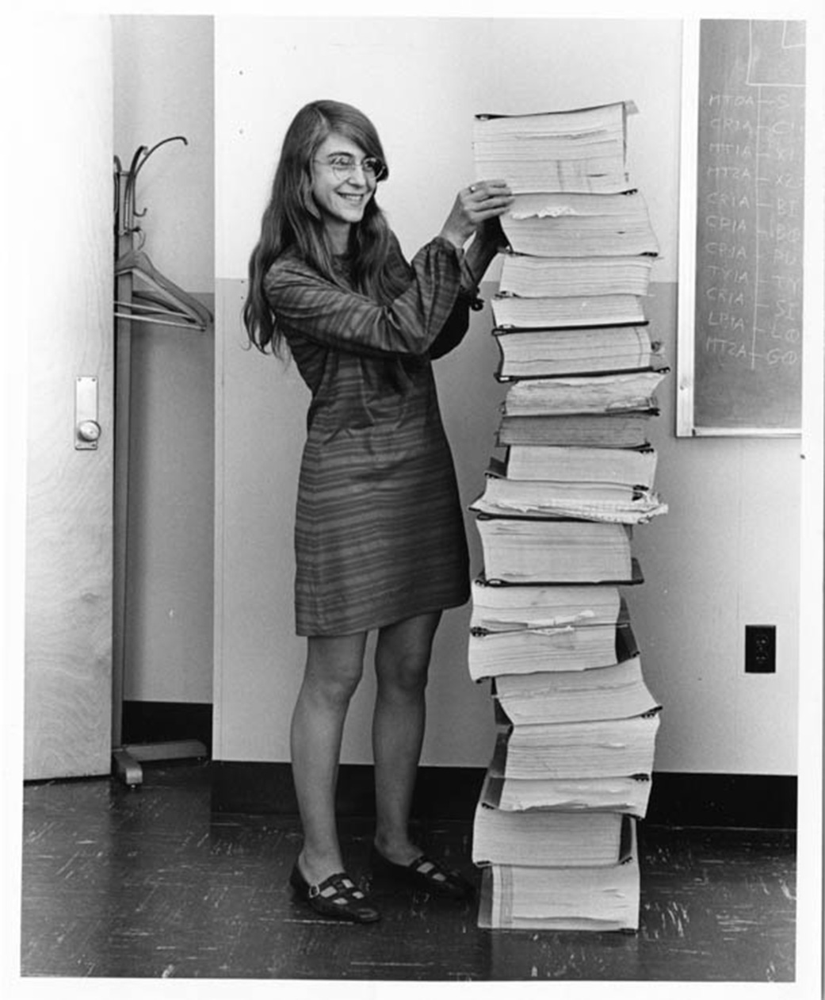

Margaret Heafield Hamilton (born August 17, 1936) is an American computer scientist, systems engineer and business owner. She was director of the Software Engineering Division of the MIT Instrumentation Laboratory, which developed on-board flight software for NASA's Apollo program. She later founded two software companies—Higher Order Software in 1976 and Hamilton Technologies in 1986, both in Cambridge, Massachusetts. Hamilton has published more than 130 papers, proceedings and reports about sixty projects and six major programs. She is one of the people credited with coining the term "software engineering". On November 22, 2016, Hamilton received the Presidential Medal of Freedom from President Barack Obama for her work leading to the development of on-board flight software for NASA's Apollo Moon missions.
She studied mathematics at the University of Michigan in 1955 before transferring to Earlham College she earned a BA in mathematics with a minor in philosophy in 1958.She cites Florence Long, the head of the math department at Earlham, as helping with her desire to pursue abstract mathematics and become a mathematics professor. She had other inspirations including her father (a philosopher and poet), and her grandfather (a school headmaster and Quaker minister). She says these men inspired her to include a minor in philosophy in her studies. While at Earlham, Hamilton met her first husband, James Cox Hamilton,a senior majoring in chemistry. They were married on June 15, 1958, the summer after she graduated from Earlham. She briefly taught high school mathematics and French at a public school in Boston, Indiana, while her husband completed his undergraduate degree at Earlham. The couple then moved to Boston, Massachusetts,where James would later earn his master's degree in chemistry from Brandeis University; they had a daughter, Lauren, born on November 10, 1959.James later graduated from Harvard Law School in 1963; he founded a law firm in Boston and also later served on the board of the American Civil Liberties Union. The couple divorced in 1967 and Margaret married Dan Lickly two years later.
In Boston, she initially intended to enroll in graduate study in abstract mathematics at Brandeis. However, in the summer of 1959, Hamilton began working for Edward Norton Lorenz, in the meteorology department at MIT. She developed software for predicting weather, programming on the LGP-30 and the PDP-1 computers at Marvin Minsky's Project MAC. Her work contributed to Lorenz's publications on chaos theory. At the time, computer science and software engineering were not yet established disciplines; instead, programmers learned on the job with hands-on experience. She moved on to another project in the summer of 1961, and hired and trained Ellen Fetter as her replacement.
.jpg)
From 1961 to 1963, Hamilton worked on the Semi-Automatic Ground Environment (SAGE) Project at the MIT Lincoln Lab, where she was one of the programmers who wrote software for the prototype AN/FSQ-7 computer (the XD-1), used by the U.S. Air Force to search for possibly unfriendly aircraft. She also wrote software for a satellite tracking project at the Air Force Cambridge Research Laboratories. The SAGE Project was an extension of Project Whirlwind, started by MIT to create a computer system that could predict weather systems and track their movements using simulators. SAGE was soon developed for military use in anti-aircraft air defense from potential Soviet attacks during the Cold War. Hamilton said:What they used to do when you came into this organization as a beginner, was to assign you this program which nobody was able to ever figure out or get to run. When I was the beginner they gave it to me as well. And what had happened was it was tricky programming, and the person who wrote it took delight in the fact that all of his comments were in Greek and Latin. So I was assigned this program and I actually got it to work. It even printed out its answers in Latin and Greek. I was the first one to get it to work. It was her efforts on this project that made her a candidate for the position at NASA as the lead developer for Apollo flight software.
Hamilton then joined the Charles Stark Draper Laboratory at MIT, which worked on the Apollo space mission. She eventually led a team credited with developing the software for Apollo and Skylab. Hamilton's team was responsible for developing in-flight software,which included algorithms designed by various senior scientists for the Apollo command module, lunar lander and the subsequent Skylab.Another part of her team designed and developed the systems software. This included error detection and recovery software such as restarts and the Display Interface Routines (also known as the Priority Displays), which Hamilton designed and developed.She worked to gain hands-on experience during a time when computer science courses were uncommon and software engineering courses did not exist. Hamilton also served as Director of the Software Engineering Division. Her areas of expertise include:systems design and software development, enterprise and process modeling, development paradigm, formal systems modeling languages, system-oriented objects for systems modeling and development, automated life-cycle environments, methods for maximizing software reliability and reuse, domain analysis, correctness by built-in language properties, open-architecture techniques for robust systems, full life-cycle automation, quality assurance, seamless integration, error detection and recovery techniques, man-machine interface systems, operating systems, end-to-end testing techniques, and life-cycle management techniques
In one of the critical moments of the Apollo 11 mission, the Apollo Guidance Computer together with the on-board flight software averted an abort of the landing on the Moon. Three minutes before the lunar lander reached the Moon's surface, several computer alarms were triggered. The on-board flight software captured these alarms with the "never supposed to happen displays" interrupting the astronauts with priority alarm displays. Hamilton had prepared for just this situation years before: There was one other failsafe that Hamilton likes to remember. Her “priority display” innovation had created a knock-on risk that astronaut and computer would slip out of synch just when it mattered most. As the alarms went off and priority displays replaced normal ones, the actual switchover to new programmes behind the screens was happening “a step slower” than it would today. Hamilton had thought long and hard about this.It meant that if Aldrin, say, hit a button on the priority display too quickly, he might still get a “normal” response. Her solution: when you see a priority display, first count to five. The astronauts had inadvertently left the rendezvous radar switch on, causing these alarms to be triggered. The computer was overloaded with interrupts caused by incorrectly phased power supplied to the lander's rendezvous radar. The program alarms indicated "executive overflows", meaning the guidance computer could not complete all of its tasks in real time and had to postpone some of them. The asynchronous executive designed by J. Halcombe Laning was used by Hamilton's team to develop asynchronous flight software: Because of the flight software's system-software's error detection and recovery techniques that included its system-wide "kill and recompute" from a "safe place" restart approach to its snapshot and rollback techniques, the Display Interface Routines (AKA the priority displays) together with its man-in-the-loop capabilities were able to be created in order to have the capability to interrupt the astronauts' normal mission displays with priority displays of critical alarms in case of an emergency. This depended on our assigning a unique priority to every process in the software in order to ensure that all of its events would take place in the correct order and at the right time relative to everything else that was going on. Hamilton's priority alarm displays interrupted the astronauts' normal displays to warn them that there was an emergency "giving the astronauts a go/no go decision (to land or not to land)".Jack Garman, a NASA computer engineer in mission control, recognized the meaning of the errors that were presented to the astronauts by the priority displays and shouted, "Go, go!" and they continued. Paul Curto, senior technologist who nominated Hamilton for a NASA Space Act Award, called Hamilton's work "the foundation for ultra-reliable software design". Hamilton later wrote of the incident: The computer (or rather the software in it) was smart enough to recognize that it was being asked to perform more tasks than it should be performing. It then sent out an alarm, which meant to the astronaut, 'I'm overloaded with more tasks than I should be doing at this time and I'm going to keep only the more important tasks'; i.e., the ones needed for landing ... Actually, the computer was programmed to do more than recognize error conditions. A complete set of recovery programs was incorporated into the software. The software's action, in this case, was to eliminate lower priority tasks and re-establish the more important ones ... If the computer hadn't recognized this problem and taken recovery action, I doubt if Apollo 11 would have been the successful moon landing it was. — Letter from Margaret H. Hamilton, Director of Apollo Flight Computer Programming MIT Draper Laboratory, Cambridge, Massachusetts, titled "Computer Got Loaded", published in Datamation, March 1, 1971.